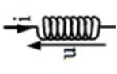

Condensateur
Important
Condensateur et capacité
Fig. 11 Schéma d’un condensateur
Un condensateur (ou capacitance) est un dipôle linéaire passif constitué de deux armatures métalliques dont l’équation d’évolution est:
\[
q(t) = C u(t)
\]
où q(t) est la chargée portée par l’armature où pointe la flèche de la tension u(t).
C est appelée capacité du condensateur.
Important
Energie stockée dans un condensateur
Lorsqu’on applique une tension u à ses bornes, un condensateur stocke une énergie :
\[
E_{el} = \frac{1}{2} C u^2
\]
Bobine idéale et inductance
Important
Bobine ou inductance

Fig. 12 Schéma d’une bobine
Une inductance (ou bobine) est un dipôle dont l’équation d’évolution en convention récepteur est:
\[
u(t) = L \frac{di}{dt}(t)
\]
Important
Energie stockée dans une bobine
Lorsqu’un courant i circule dans une bobine, celle-ci stocke une énergie :
\[
E_{mag} = \frac{1}{2} L i^2
\]